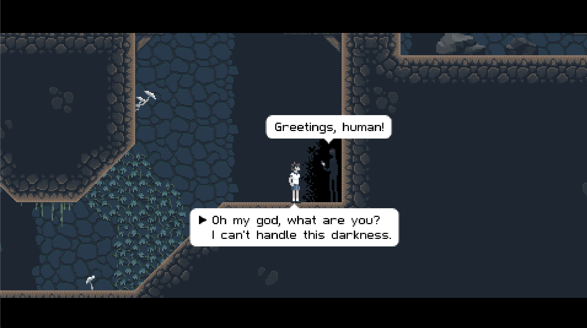
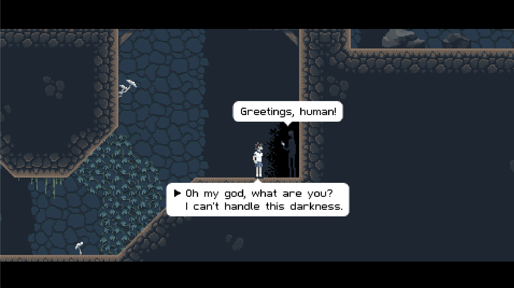
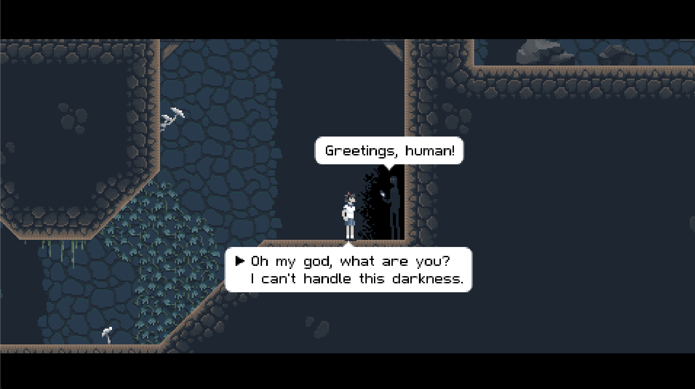

This project was created during Digit 100. The game fosters an illusion of exploration through its straightforward design. Features such as interactive non-player characters, including the animated fire and shadow figure, along with quest frameworks and environmental elements like directional signs that aid or guide players, enrich this experience. Despite the simplicity of the graphics and the minimalistic background music, these elements work together to establish a functional, engaging, and user-friendly gaming environment.
The game environment is designed to be straightforward and practical, initially providing few opportunities for exploration. Players learn the game mechanics during a tutorial segment, where they engage with items such as a skull and a bone to enhance their skills. Notable aspects of the environment consist of interactive signs and objectives, including the collection of wood for a non-player character (NPC), which anchors the fictional context in recognizable and relatable activities. Although exploration is limited, the designated tasks imbue the restricted world with a significant sense of purpose.
Players take on the role of a single character, which they choose at the outset of the game, with options for either a male or female avatar and the capacity to adjust their voice pitch (high or low). This basic level of customization allows for some degree of personalization; however, it does not significantly influence the gameplay or narrative experience. The character is intentionally crafted to be somewhat generic, aligning with the game’s minimalist design philosophy. There is a notable absence of comprehensive development concerning the character’s personality or backstory, leading to limited emotional investment for players beyond the available customization features. This design decision highlights the game’s focus on tasks and challenges rather than on narrative intricacy or character depth. While this approach ensures a straightforward gaming experience, it ultimately diminishes the uniqueness and memorability of the player’s character.
Non-playable characters (NPCs) are crucial to advancing the narrative of the game by offering quests and support. For example, the animated fire NPC requests that the player collect wood to maintain its flames, thereby establishing a task for the player. In contrast, the shadow man provides strategic advice. These interactions are straightforward and utilitarian, highlighting the game's focus on task completion rather than intricate dialogues or the cultivation of deep relationships with NPCs.
The game presents players with a range of challenges through the assignment of quests and tasks that frequently involve gathering items or engaging in problem-solving activities. Environmental cues, such as signs, offer guidance or hints to assist players in their pursuits. A notable difficulty arises from the absence of a save function, compelling players to adopt strategic approaches and exercise caution, as errors may require a total restart of the game. This aspect introduces an additional layer of complexity and tension to what is fundamentally a quest-oriented game.
In the game, objects are integral to enhancing the gameplay experience. In the initial tutorial, players engage with items such as a skull and a bone to grasp the basic mechanics. As the game progresses, additional items, including wood required for the fire NPC, become vital for quest completion. Moreover, signs dispersed throughout the game environment provide written instructions, delivering guidance and contextual information to players.
The audio design of the game is marked by its straightforwardness and efficiency. The background music creates a unified atmosphere that deepens player engagement, even though it does not dominate the experience. The sound effects play a more understated role, offering minimal hints or critical functions; instead, they contribute to the overall ambiance in a refined and supportive manner.
The game adopts a minimalist aesthetic by incorporating several meta elements, notably a straightforward announcement about the lack of a save feature. This self-referential aspect prompts players to embrace its simplicity and the challenges that arise from its structure. By recognizing this limitation, the game solidifies its unique identity.
The game, while situated in a fantastical setting, incorporates aspects that reflect genuine human experiences. A significant example is the non-player character (NPC) that necessitates wood to sustain its fire, exemplifying essential concepts of survival and resource management. Although the game does not extensively explore cultural themes or societal critiques, these subtle yet pragmatic connections to real-world logic enhance the overall gaming experience.
